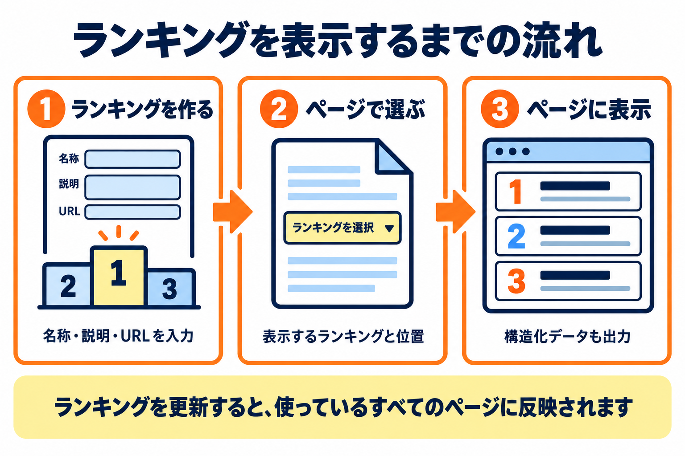
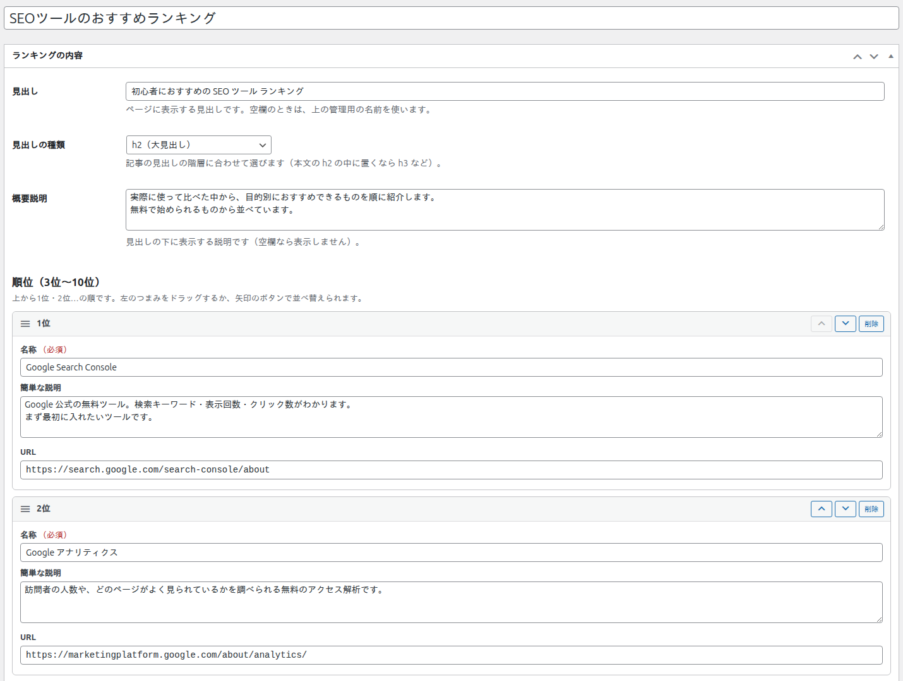

Kashiwazaki SEO Recommended Ranking マニュアル

投稿・固定ページ・カスタム投稿に、おすすめランキングを表示するプラグインです。ランキングを 1 か所で作って管理し、ページの本文の上や下に自動で表示したり、本文の好きな位置にショートコードで置いたりできます。ランキングの内容は、ページの見た目と構造化データ（JSON-LD）の両方に、同じ文字で出力されます。
「初心者におすすめの SEO ツール ランキング」のように、順位をつけて紹介するページをよく書く方のためのプラグインです。ランキングの見出し・説明・順位ごとの名称・説明・URL を管理画面で 1 度入力しておけば、必要なページに何度でも表示できます。ランキングを更新すると、そのランキングを使っているすべてのページの表示が同じ内容に変わります。
ランキングの一元管理
ランキングを専用の画面でつくり、一覧で管理します。順位は 3 位から 10 位まで。複製や、入力中のプレビューも使えます。
自動挿入とショートコード
ページごとに、表示するランキングと位置（本文の上・本文の下・手動・表示しない）を選べます。本文の好きな位置には、ショートコードで置けます。
構造化データ
表示したランキングと同じ内容を、構造化データ（JSON-LD）としてページに出力します。ランキングごとに出力を止めることもできます。


できること
- ランキング 1 つにつき、見出し・見出しの種類・概要説明と、3 位から 10 位までの順位（名称・簡単な説明・URL）を入力できます。
- 見た目を 5 つの型（スタンダード・王冠・シンプル・比較表・上位3つを大きく）から選べます。メインの色、1 位から 3 位の金・銀・銅の色、ボタンの文言も決められます。
- 投稿・固定ページ・カスタム投稿の編集画面で、表示するランキングと位置を選べます。本文の好きな位置には、ショートコードで置けます。
- リンクを新しいタブで開くか、ほかのサイトへのリンクに nofollow や sponsored を付けるかを、ランキングごとに決められます。
- 構造化データ（JSON-LD）を、ランキングごとにオン・オフできます。
- 置いた場所の幅に合わせて、スマホでも見やすい形に自動で切り替わります。
SEO / GEO における強み
このプラグインの出力は、次のような点で、検索エンジンや AI がページの内容をつかむ助けになる可能性があります。効果の大きさは、ページ全体の内容や検索エンジンの判断によって変わります。
SEO（検索エンジン向け）
- ランキングを、順位のついた一覧として出力します。順位ごとの名称・説明・リンクが、1 つの一覧としてまとまった形で本文に出ます。見出し（h2・h3・h4）は、ランキングの枠の直前に置かれ、見出しの階層を記事に合わせて選べます。
- 構造化データ（JSON-LD）を出力できます。ItemList（ランキング全体）・ListItem（各順位）・Recommendation（おすすめ）の形で、順位・名称・説明・URL を出力します。検索エンジンがランキングの構造を読み取る助けになる場合があります。ただし、検索結果での表示や順位への影響は、検索エンジンの判断によります。
- リンクの rel を選べます。広告やアフィリエイトのリンクには sponsored、リンク先を評価してほしくないときは nofollow を、ほかのサイトへのリンクだけに付けられます。
- ページ速度を落としにくい作りです。公開ページで読み込むのは CSS 1 本（約 33KB、圧縮すると約 5KB）だけで、JavaScript は読み込みません。ランキングを表示するページだけで読み込みます。
GEO（AI 検索向け）
- ランキングの内容が、本文と構造化データの両方に同じ文字で出ます。順位・名称・説明・URL が整理された形でページにあるため、AI が内容を引用しやすい構造を作る助けになります。
- おすすめしている人（author）を構造化データに入れられます。ページの投稿者（人）またはサイト名（組織）を選べます。
このプラグインは価格や評価を出力しません。そのため、おすすめする対象の種類で「商品（Product）」を選んでも、Google の商品のリッチリザルトの対象にはならず、Search Console に注意が表示されることがあります。迷ったときは「指定しない（Thing）」を選んでください。詳しくは構造化データのページを見てください。
目次
| ページ | 内容 |
|---|---|
| インストール・初期設定 | インストールから、最初のランキングを表示するまで |
| ランキング一覧 | つくったランキングの一覧、複製、ショートコードのコピー |
| ランキングの内容 | 見出し・説明・順位ごとの入力、公開できる条件、入力のメッセージ |
| デザイン・ボタン・リンク | 5 つの型、ボタンの文言、リンクの開き方、rel |
| 構造化データ | JSON-LD の出力、対象の種類、まとめの形 |
| プレビューとショートコード | 入力中のプレビュー、ショートコード、使っているページ |
| 投稿の編集画面のボックス | ページごとに、表示するランキングと位置を選ぶ |
| 設定画面 | 表示するページ、デザインの既定、構造化データ、削除のときのデータ |
| 公開ページでの表示 | どこに、どんな条件で表示されるか |
| 用語集 | このマニュアルの用語のまとめ |
| トラブルシューティング | ランキングが表示されないときの確認など |
動作要件
| 項目 | 内容 |
|---|---|
| WordPress | 6.0 以上 |
| PHP | 7.4 以上（特別な PHP の拡張は必要ありません） |
| ブラウザ | 管理画面は、WordPress の管理画面が動く現在のブラウザ。公開ページの「置いた場所の幅に合わせた切り替え」は新しいブラウザで働き、古いブラウザでは狭い形（縦に並ぶ形）のままで表示されます。 |
| 権限 | ランキングの作成・編集は、WordPress の「投稿」と同じ権限で行えます。設定画面は管理者だけが開けます。 |